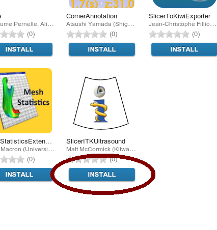

Installation¶
Install via the Slicer Extension Manager of the 3D Slicer Nightly version:
- Download, install, and run the 3D Slicer Nightly Build
- Select View -> Extension Manager
- Hit the INSTALL button for SlicerITKUltrasound
- Restart 3D Slicer
- The modules will be present in the Ultrasound category

Installation button in the Slicer Extension Manager